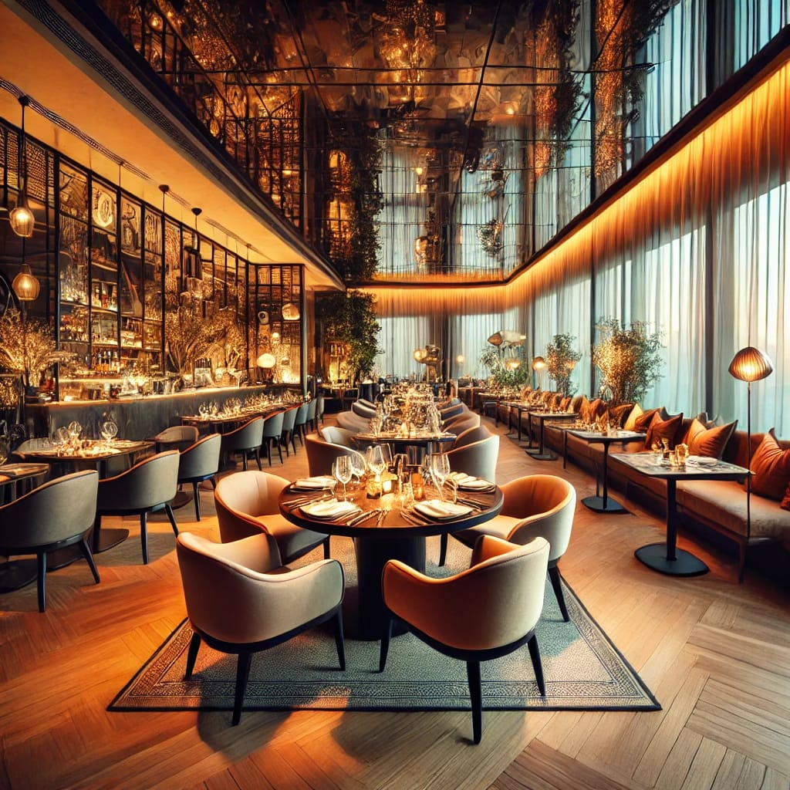
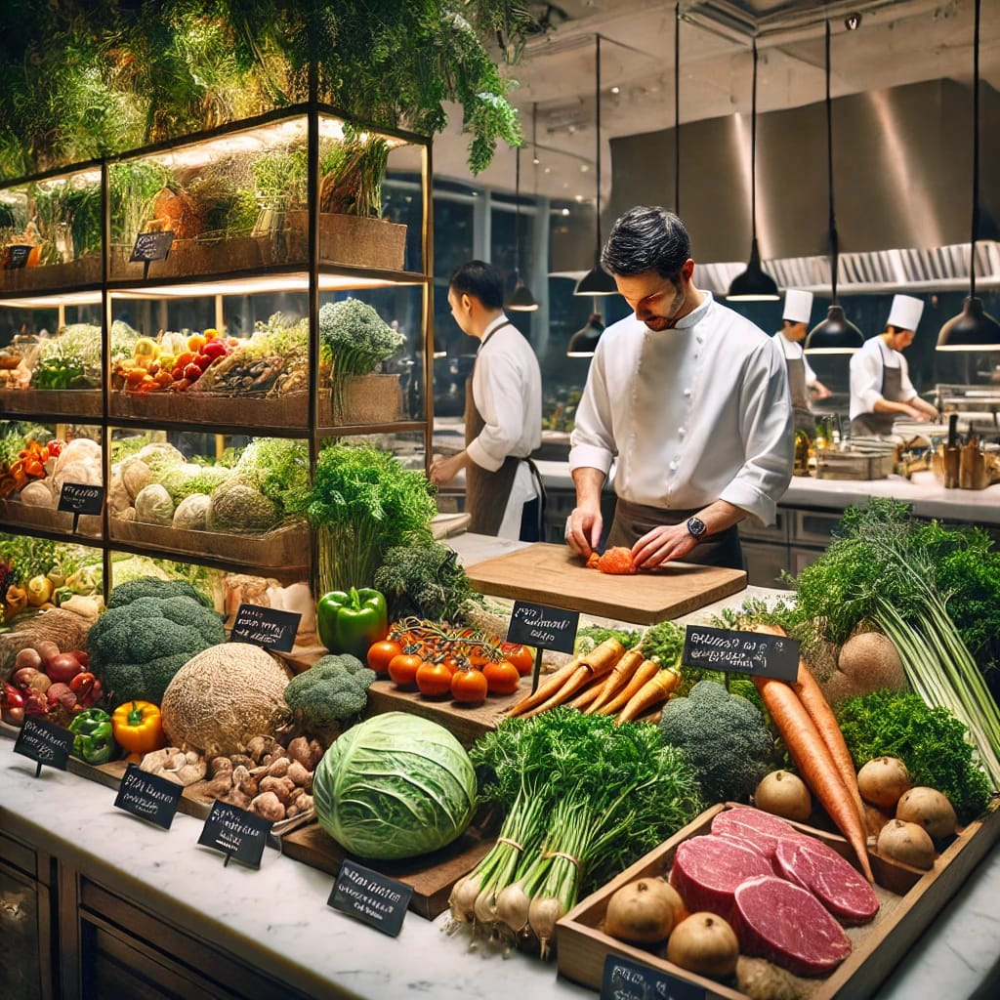

Welcome to Gourmet Haven

At Gourmet Haven, we believe that every meal is a celebration. Established in 2010, our journey began with a passion for crafting *extraordinary dining experiences* through a combination of exquisite flavors, fresh ingredients, and warm hospitality.
Our Mission

We strive to bring people together through the *art of fine dining, offering a menu inspired by **global cuisines* while staying true to the rich traditions of classic flavors. Our mission is to serve delicious, high-quality meals in a *vibrant, welcoming atmosphere*.
Meet Our Team
Our team consists of world-class chefs, skilled bartenders, and passionate staff dedicated to making every visit *unforgettable. Led by our Executive Chef, James Redding, our kitchen creates dishes that **delight the senses* with creativity and authenticity.
The Gourmet Haven Experience
Designed to offer an *elegant yet cozy ambiance, our restaurant is the perfect place for **romantic dinners, family gatherings, and corporate events. Whether you're indulging in a five-course meal or enjoying a casual brunch, we promise an **unmatched culinary experience*.
Our Ingredients & Sustainability
We believe in using only the *freshest organic ingredients, sourced locally whenever possible. Our commitment to **sustainability and ethical sourcing* ensures that every dish is not only delicious but also *environmentally responsible*.
Join Us
Whether you're here for a *gourmet feast* or simply a cup of coffee with friends, we welcome you to experience *Gourmet Haven*. Visit us and discover why we are known as the ultimate destination for food lovers.